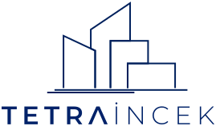

Sadelik, en nihai
gelişmişliktir.
Üç seri: Doğa, Kavram ve Süreç. 27 post, dama düzeninde Reels kapakları ve tasarım postları. Logo her postta tek bir sabit kurala göre yerleştirilir.
Sabit logo kullanımı
Logo yalnızca iki orijinal dosyadan (dikey ve yatay) kullanılır. Yeniden çizilmez, harf aralığı ve oranı değiştirilmez. Renk yalnızca lacivert #002269 ya da beyazdır.

Dikey · lacivert · açık zemin
Dikey · beyaz · koyu zemin
Yatay · beyaz · fotoğraf üstü (üst perde ile)Tasarım postu
Dikey logo, alt ortada. Genişlik postun %23'ü (1080 px'te 248 px), alttan boşluk %6,5 (70 px). Renk, logonun oturduğu alt bölgeye göre seçilir: açık düz zeminde lacivert, fotoğraf ya da koyu zeminde beyaz (altında %30'luk koyu perde).
Reels kapağı
Yatay logo, sol üstte. Genişlik %27 (292 px), üstten ve soldan %6,5 (70 px). Her zaman beyaz, altında %42'lik koyu üst perde. Sağ üst köşe Instagram'ın Reels simgesine ayrılır, boş kalır.
Koruma alanı
Logonun çevresinde en az simgedeki en küçük kutunun yüksekliği kadar boşluk. Başlık, "Görseller temsilidir" ibaresi ya da görselin ana öğesi bu alana girmez.
En küçük boyut
Yatay logo 180 px, dikey logo 140 px genişliğin altına inmez. Profil grid'inde okunmasa da bu kural postun tam boyutu için geçerlidir.
Tek logo
Bir postta logo yalnızca bir kez kullanılır. Görselin içine (bina cephesi, tabela) ikinci bir logo yerleştirilmez.
Kaynak dosya
Dikey ve yatay logo, lacivert ve beyaz olmak üzere dört vektör dosya.
İki şablon, tek sistem
Her post iki şablondan birine oturur. Görsel değişir, yerleşim değişmez. Bütün ölçüler 1080 × 1350 px (4:5) posta göre verildi.
Reels kapağı
- Yatay beyaz logo, sol üst, 70 px içeride.
- Başlık sol altta, alttan 119 px. Cormorant Garamond Light, 88 px, en fazla iki satır.
- "Görseller temsilidir" sol altta, 19 px.
- Sağ üst köşe boş (Instagram'ın Reels simgesi).
- Kapak 9:16 çekilir; yazı ve logo profil grid'inin gösterdiği orta 3:4 alanın içinde kalır.
Tasarım postu
- İsteğe bağlı üst etiket (Manrope, aralıklı büyük harf).
- Başlık üst ortada, 108 px aşağıda. İkinci satır italik.
- Dikey logo alt ortada, 70 px yukarıda.
- "Görseller temsilidir" sağ altta (fotoğraflı postlarda).
- Açık zeminde lacivert, koyu zeminde beyaz. Ara ton yok.
27 post, tek tek
Numara, profil grid'indeki yeri gösterir (sol üstten sağ alta). Instagram en yeni postu başa koyduğu için paylaşım sırası tersidir: önce 27, en son 1.
Profil grid'i
Dama düzeni: her satırda Reels kapağı ve tasarım postu sırayla değişir, dikeyde de aynı tür alt alta gelmez. Instagram profili kareleri 3:4 kırparak gösterir; 4:5 görünüme geçip farkı görebilirsiniz.